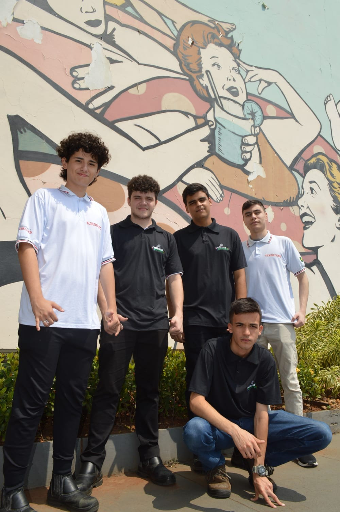

Hobbies
João Vítor Martinelle

Meu principal hobbie é jogar videogame, principalmente jogos online.
Os jogos que mais marcaram minha vida são Minecraft, Fortnite e Rainbow Six Siege.
Minecraft se destaca pela liberdade que fornece ao jogador, sendo um ótimo jogo de exploração que
estimula a criatividade.
Fortnite é um jogo complexo, que sempre está passando por diversas atualizações, garantindo uma
experiência nova de maneira recorrente ao jogador.
Rainbow Six Siege possui um sistema de estratégia divertido, combinando ação, planejamento e trabalho em
equipe.


Durante a pandemia, esses jogos foram muito importantes para mim.
Me lembro de estudar nas aulas online e de jogar com meus amigos.

Também tenho uma grande afinidade com a edição e produção de vídeo, seja para o âmbito acadêmico ou
comercial.
Já participei na edição e gravação da "Cultura Esportiva", um projeto jornalístico desenvolvido durante o
ensino médio com meus amigos.
Esse projeto tem como objetivo valorizar o esporte local, trazendo reconhecimento aos atletas da região de
Sorocaba - SP.

Página da Cultura Esportiva no Instagram: @culturaesportiva

Acesse um dos vídeos desenvolvidos aqui -> Visita do Paraná ao SESI Sorocaba - Vídeo Youtube

Home
Projetos Pessoais
Contato